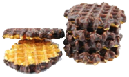
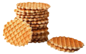
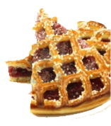

Wafels en Vlaaien 21/11/2015
Beste sportievelingen,
De dagen worden al een beetje korter en de temperaturen beginnen stilaan te zakken. Het najaar is ingezet en dat gaat bij de turnkring traditiegetrouw gepaard met onze overheerlijke wafels & vlaaien, dit jaar op zaterdag 21 november 2015. Met de opbrengst kunnen we ons materiaal onderhouden en zeker ook nieuw turn- en speelmateriaal aankopen. Uw hulp is dus zeker welkom, want onze turners en turnsters verdienen een goede omkadering.
Smullen maar!
Onze wafels worden verkocht per doos voor slechts € 5,00. Hierbij heeft u de keuze uit zachte wafels of hardere galetten, beide met of zonder chocolade.
Voor onze vlaaien heeft u keuze uit een ruim assortiment smaken: rijst, pruimen, krieken, abrikozen, appel of nougatine voor € 6,00 per stuk.
Vanaf dit jaar hebben we ook een NIEUWE SMAAK: smurfenvlaai (met abrikozen en witte chocoladeschilfers).
Bestellen kan bij voorkeur online via onderstaand bestelformulier. Betaling gebeurt dan via overschrijving op rekeningnummer BE43 9730 7195 1301.
U kan uw keuze ook doorgeven via het papieren formulier dat u hier kan downloaden en printen. Gelieve dit dan volledig ingevuld en met gepast geld in een enveloppe af te geven aan de leiding. Graag zeker ook uw e-mailadres en telefoonnummer op het bestelformulier invullen zodat wij u kunnen bereiken, indien nodig.
Bestellen kan tot en met vrijdag 13 november 2015.
Voor een vlot verloop vragen wij om uw wafels en vlaaien zelf af te halen op zaterdag 21 november 2015. U kan daarvoor terecht in de turnzaal (Lange Van Bloerstraat 90) tussen 10u00 en 12u00. We leveren ook aan huis voor wie er zelf niet kan geraken.
Voor meer informatie kunt u steeds terecht bij de leiding of via wafels@turnkringswa.be
Wij danken u alvast voor uw steun.
Smakelijk! - Team SWA -